Secuencias de aproximación, GS4 y hasta cinco segundos reales posteriores; se cortan ante siguiente episodio o cambio de sesión. Un cuadro de cada dos más transiciones. Las etiquetas de tiempo son del AVI a 20 FPS, no el reloj real.
Informe · Video · Todas las acciones
El pivote derecho pierde conexion; 0,33 s de busqueda izquierda recuperan cinta. Alterna +54/-65 antes de estabilizar y continuar.
| start | end | gs | quien | angle_first | angle_last | duration |
|---|---|---|---|---|---|---|
| 160 | 167 | 0 | centroide | -58.1 | -83.8 | 0.251 |
| 168 | 169 | 0 | recup-confirma | -83.8 | -83.8 | 0.031 |
| 170 | 170 | 4 | recup-disparo-sin-decision | 0.0 | 0.0 | 0.000 |
| 171 | 185 | 4 | recup-espera-retro-ack | 0.0 | 0.0 | 0.531 |
| 186 | 186 | 4 | recup-AMBIGUA | 0.0 | 0.0 | 0.000 |
| 187 | 207 | 4 | recup-CURVA | -61.0 | -61.0 | 0.696 |
| 208 | 208 | 0 | recup-CURVA | 0.0 | 0.0 | 0.000 |
| 209 | 218 | 0 | recup-cooldown-recto | 0.0 | 0.0 | 0.295 |
| 219 | 229 | 0 | recup-guard-reenganche | 85.0 | 85.0 | 0.333 |
| 230 | 340 | 0 | centroide | 53.6 | 56.4 | 4.189 |
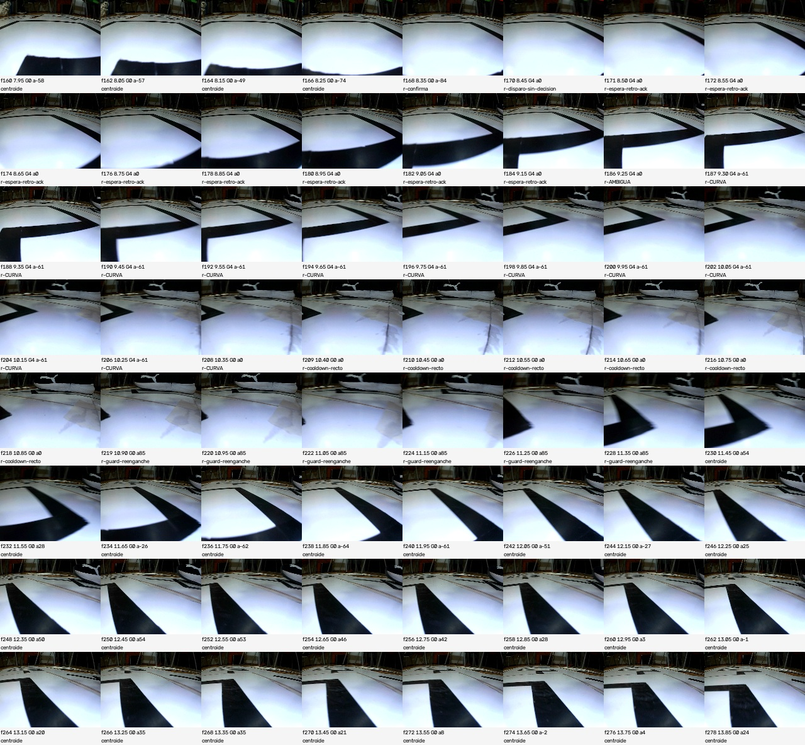
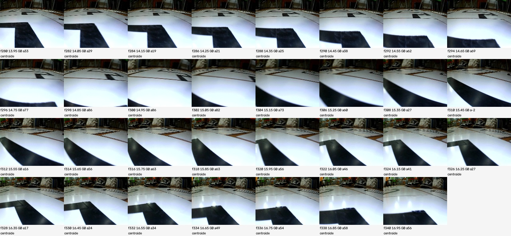
Izquierda; vuelve a cinta y sigue la curva con correcciones alternantes. No interviene la busqueda nueva.
| start | end | gs | quien | angle_first | angle_last | duration |
|---|---|---|---|---|---|---|
| 341 | 348 | 0 | centroide | 57.5 | -87.6 | 0.260 |
| 349 | 350 | 0 | recup-confirma | -87.6 | -87.6 | 0.029 |
| 351 | 351 | 4 | recup-disparo-sin-decision | 0.0 | 0.0 | 0.000 |
| 352 | 366 | 4 | recup-espera-retro-ack | 0.0 | 0.0 | 0.510 |
| 367 | 367 | 4 | recup-AMBIGUA | 0.0 | 0.0 | 0.000 |
| 368 | 387 | 4 | recup-CURVA | 58.1 | 58.1 | 0.687 |
| 388 | 388 | 0 | recup-CURVA | 0.0 | 0.0 | 0.000 |
| 389 | 397 | 0 | recup-cooldown-recto | 0.0 | 0.0 | 0.292 |
| 398 | 519 | 0 | centroide | -9.9 | 59.1 | 4.580 |
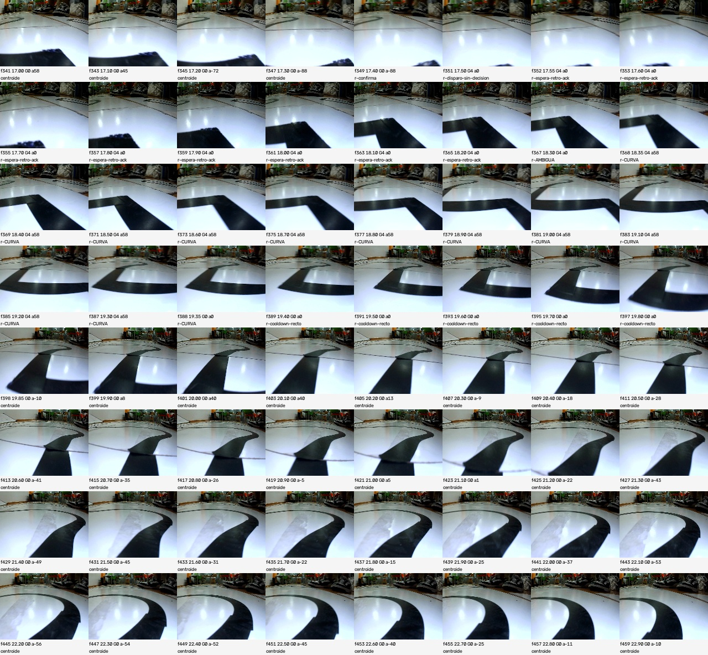
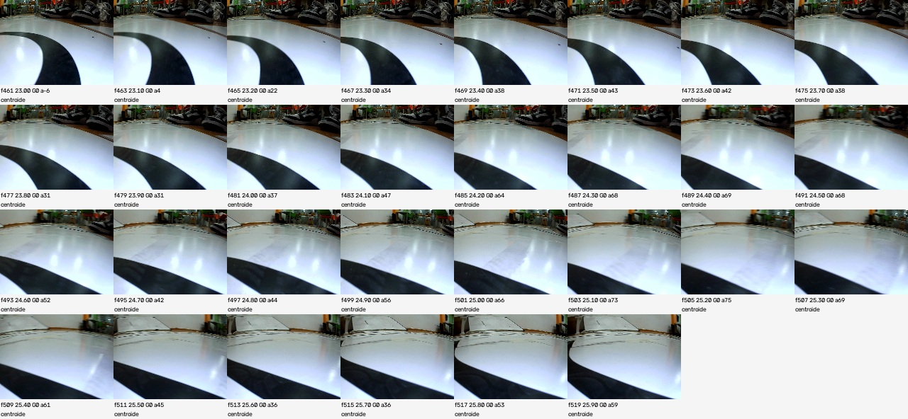
Derecha; cinta transversal al salir. COMPLETAR_GIRO manda -85 y vuelve al seguidor; despues llega al GAP 4.
| start | end | gs | quien | angle_first | angle_last | duration |
|---|---|---|---|---|---|---|
| 659 | 663 | 0 | centroide | -86.7 | -37.5 | 0.146 |
| 664 | 664 | 0 | recup-confirma | -37.5 | -37.5 | 0.000 |
| 665 | 666 | 0 | centroide | 87.3 | 87.8 | 0.035 |
| 667 | 668 | 0 | recup-confirma | 87.8 | 87.8 | 0.033 |
| 669 | 669 | 4 | recup-disparo-sin-decision | 0.0 | 0.0 | 0.000 |
| 670 | 684 | 4 | recup-espera-retro-ack | 0.0 | 0.0 | 0.524 |
| 685 | 686 | 4 | recup-AMBIGUA | 0.0 | 0.0 | 0.043 |
| 687 | 703 | 4 | recup-CURVA | -66.6 | -66.6 | 0.621 |
| 704 | 704 | 0 | recup-CURVA | -66.6 | -66.6 | 0.000 |
| 705 | 707 | 0 | centroide | 34.3 | 5.8 | 0.079 |
| 708 | 713 | 0 | recup-completa-giro | -85.0 | -85.0 | 0.215 |
| 714 | 759 | 0 | centroide | -24.7 | -41.1 | 1.677 |
| 760 | 761 | 0 | recup-confirma | -41.1 | -41.1 | 0.034 |
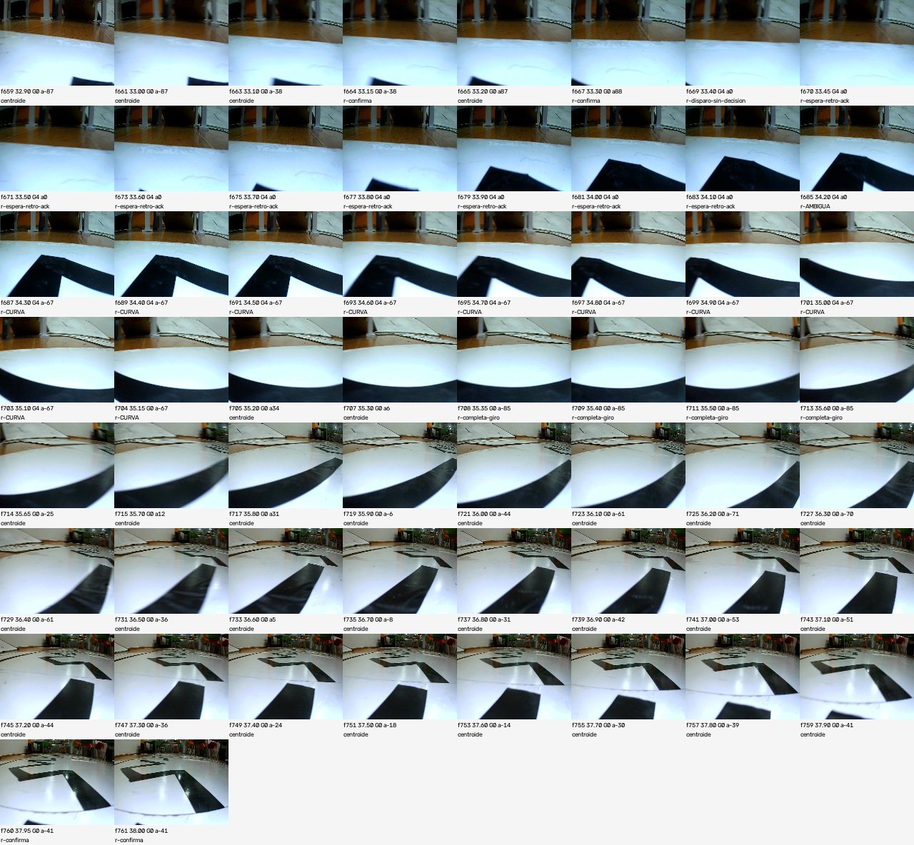
GS18 recto cruza y declara recuperado en f803. La curva inmediata se pierde y dispara 5 en f843.
| start | end | gs | quien | angle_first | angle_last | duration |
|---|---|---|---|---|---|---|
| 752 | 759 | 0 | centroide | -14.0 | -41.1 | 0.250 |
| 760 | 761 | 0 | recup-confirma | -41.1 | -41.1 | 0.034 |
| 762 | 762 | 4 | recup-disparo-sin-decision | 0.0 | 0.0 | 0.000 |
| 763 | 778 | 4 | recup-espera-retro-ack | 0.0 | 0.0 | 0.516 |
| 779 | 779 | 4 | recup-AMBIGUA | 0.0 | 0.0 | 0.000 |
| 780 | 780 | 18 | gap-inicio | 0.0 | 0.0 | 0.000 |
| 781 | 801 | 18 | gap-busca-negro | 0.0 | 0.0 | 0.705 |
| 802 | 802 | 0 | gap-recuperado | 0.0 | 0.0 | 0.000 |
| 803 | 840 | 0 | centroide | -43.9 | 86.6 | 1.425 |
| 841 | 842 | 0 | recup-confirma | 86.6 | 86.6 | 0.031 |
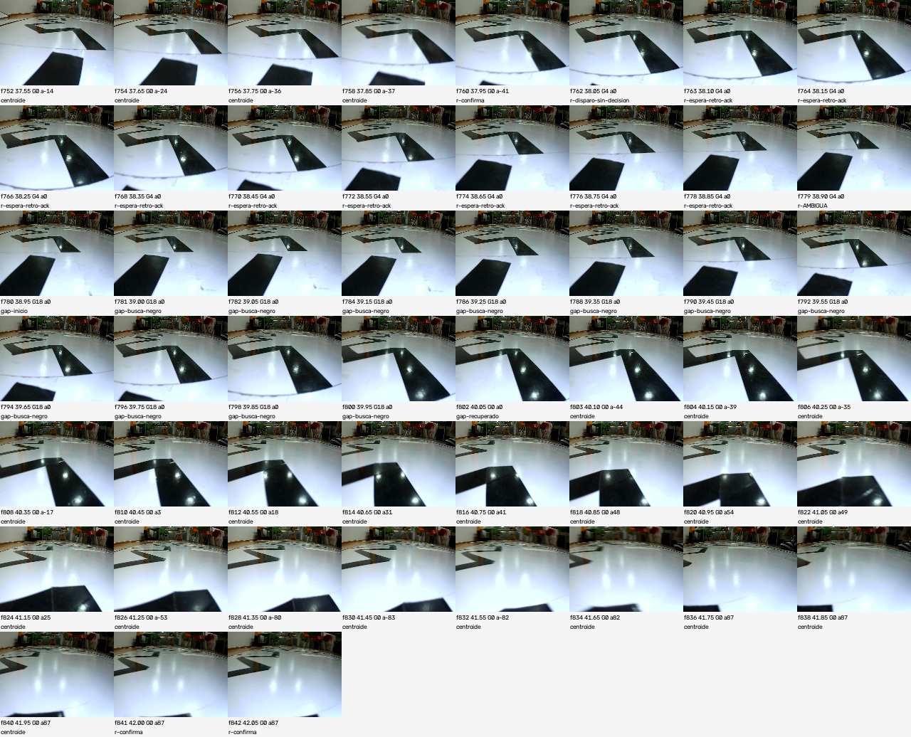
Izquierda +36,8. Cinta queda hacia el borde derecho; complemento +85 la pierde. Evidencia izquierda 9 no alcanza 12: no hay busqueda hacia fragmento.
| start | end | gs | quien | angle_first | angle_last | duration |
|---|---|---|---|---|---|---|
| 833 | 840 | 0 | centroide | -75.4 | 86.6 | 0.243 |
| 841 | 842 | 0 | recup-confirma | 86.6 | 86.6 | 0.031 |
| 843 | 843 | 4 | recup-disparo-sin-decision | 0.0 | 0.0 | 0.000 |
| 844 | 858 | 4 | recup-espera-retro-ack | 0.0 | 0.0 | 0.503 |
| 859 | 859 | 4 | recup-AMBIGUA | 0.0 | 0.0 | 0.000 |
| 860 | 879 | 4 | recup-CURVA | 36.8 | 36.8 | 0.715 |
| 880 | 880 | 0 | recup-CURVA | 0.0 | 0.0 | 0.000 |
| 881 | 890 | 0 | recup-cooldown-recto | 0.0 | 0.0 | 0.294 |
| 891 | 904 | 0 | recup-guard-completa | 85.0 | 85.0 | 0.428 |
| 905 | 905 | 19 | recup-guard-stop | 0.0 | 0.0 | 0.000 |
| 906 | 947 | 19 | perdida-failsafe-persistente | 0.0 | 0.0 | 1.361 |
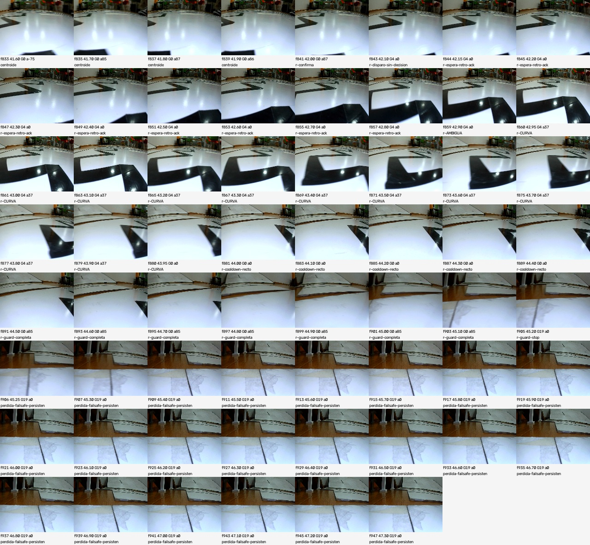
Derecha -59,3; COMPLETAR_GIRO breve -85. Cinta vuelve y sigue al GAP 7.
| start | end | gs | quien | angle_first | angle_last | duration |
|---|---|---|---|---|---|---|
| 1085 | 1092 | 0 | centroide | 77.3 | -86.9 | 0.244 |
| 1093 | 1094 | 0 | recup-confirma | -86.9 | -86.9 | 0.030 |
| 1095 | 1095 | 4 | recup-disparo-sin-decision | 0.0 | 0.0 | 0.000 |
| 1096 | 1110 | 4 | recup-espera-retro-ack | 0.0 | 0.0 | 0.506 |
| 1111 | 1111 | 4 | recup-AMBIGUA | 0.0 | 0.0 | 0.000 |
| 1112 | 1131 | 4 | recup-CURVA | -59.3 | -59.3 | 0.692 |
| 1132 | 1132 | 0 | recup-CURVA | 0.0 | 0.0 | 0.000 |
| 1133 | 1138 | 0 | recup-cooldown-recto | 0.0 | 0.0 | 0.173 |
| 1139 | 1139 | 0 | centroide | 11.8 | 11.8 | 0.000 |
| 1140 | 1141 | 0 | recup-completa-giro | -85.0 | -85.0 | 0.040 |
| 1142 | 1185 | 0 | centroide | -80.4 | -37.0 | 1.648 |
| 1186 | 1187 | 0 | recup-confirma | -37.0 | -37.0 | 0.032 |
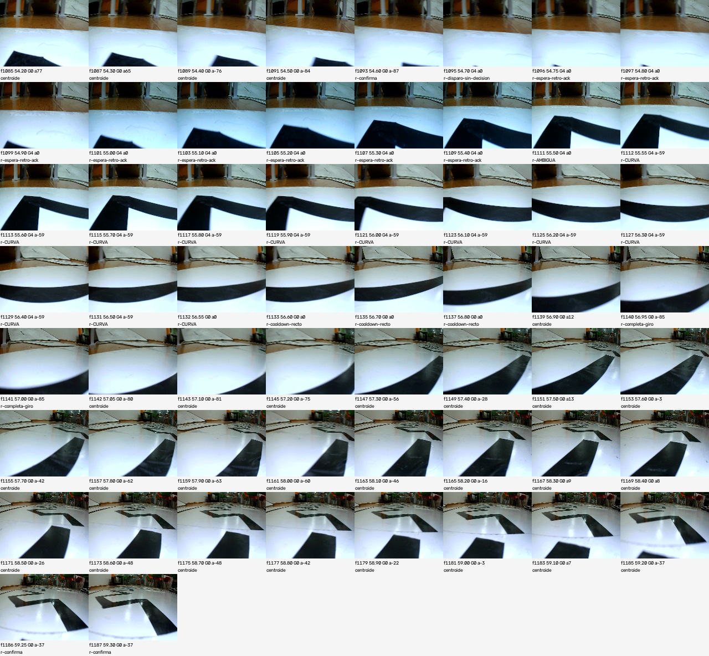
GS18 recto recupera en f1227; la curva inmediata se pierde y dispara 8 en f1261.
| start | end | gs | quien | angle_first | angle_last | duration |
|---|---|---|---|---|---|---|
| 1178 | 1185 | 0 | centroide | -32.0 | -37.0 | 0.264 |
| 1186 | 1187 | 0 | recup-confirma | -37.0 | -37.0 | 0.032 |
| 1188 | 1188 | 4 | recup-disparo-sin-decision | 0.0 | 0.0 | 0.000 |
| 1189 | 1203 | 4 | recup-espera-retro-ack | 0.0 | 0.0 | 0.517 |
| 1204 | 1204 | 4 | recup-AMBIGUA | 0.0 | 0.0 | 0.000 |
| 1205 | 1205 | 18 | gap-inicio | 0.0 | 0.0 | 0.000 |
| 1206 | 1225 | 18 | gap-busca-negro | 0.0 | 0.0 | 0.710 |
| 1226 | 1226 | 0 | gap-recuperado | 0.0 | 0.0 | 0.000 |
| 1227 | 1258 | 0 | centroide | -41.6 | 87.7 | 1.172 |
| 1259 | 1260 | 0 | recup-confirma | 87.7 | 87.7 | 0.032 |
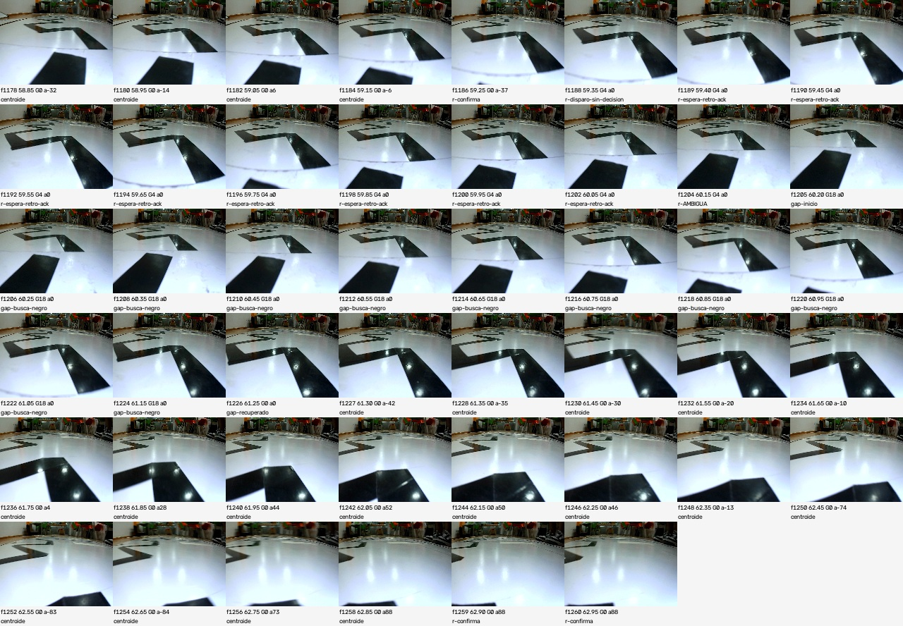
Izquierda +64,3; entrega al centroide con -64,2. Vuelve a seguir, pero pierde el siguiente codo y dispara 9.
| start | end | gs | quien | angle_first | angle_last | duration |
|---|---|---|---|---|---|---|
| 1251 | 1258 | 0 | centroide | -79.5 | 87.7 | 0.240 |
| 1259 | 1260 | 0 | recup-confirma | 87.7 | 87.7 | 0.032 |
| 1261 | 1261 | 4 | recup-disparo-sin-decision | 0.0 | 0.0 | 0.000 |
| 1262 | 1276 | 4 | recup-espera-retro-ack | 0.0 | 0.0 | 0.513 |
| 1277 | 1277 | 4 | recup-AMBIGUA | 0.0 | 0.0 | 0.000 |
| 1278 | 1296 | 4 | recup-CURVA | 64.3 | 64.3 | 0.723 |
| 1297 | 1297 | 0 | recup-CURVA | 64.3 | 64.3 | 0.000 |
| 1298 | 1387 | 0 | centroide | -64.2 | 87.9 | 3.537 |
| 1388 | 1389 | 0 | recup-confirma | 87.9 | 87.9 | 0.033 |
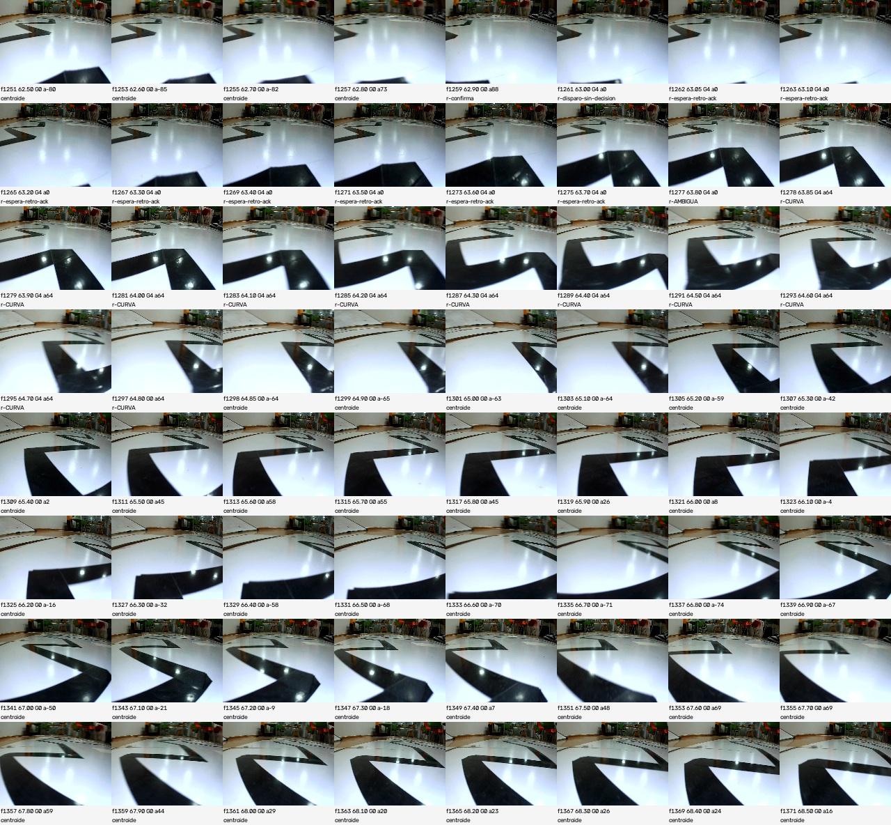
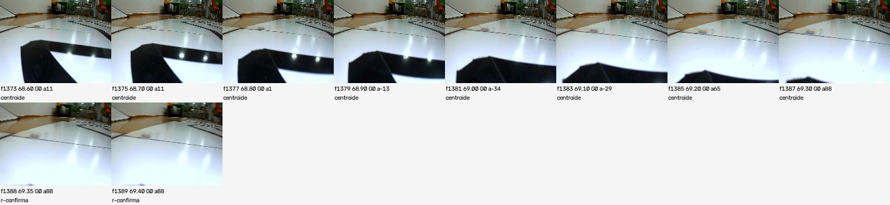
AMBIGUA unos 0,95 s; rama previa fuerza derecha -35. Luego aparece cooldown recto con linea transversal; finalmente recaptura.
| start | end | gs | quien | angle_first | angle_last | duration |
|---|---|---|---|---|---|---|
| 1380 | 1387 | 0 | centroide | -32.1 | 87.9 | 0.254 |
| 1388 | 1389 | 0 | recup-confirma | 87.9 | 87.9 | 0.033 |
| 1390 | 1390 | 4 | recup-disparo-sin-decision | 0.0 | 0.0 | 0.000 |
| 1391 | 1405 | 4 | recup-espera-retro-ack | 0.0 | 0.0 | 0.498 |
| 1406 | 1430 | 4 | recup-AMBIGUA | 0.0 | 0.0 | 0.947 |
| 1431 | 1431 | 4 | recup-CURVA | -35.0 | -35.0 | 0.000 |
| 1432 | 1432 | 0 | recup-CURVA | -35.0 | -35.0 | 0.000 |
| 1433 | 1445 | 0 | centroide | -37.7 | -4.8 | 0.480 |
| 1446 | 1457 | 0 | recup-cooldown-recto | 0.0 | 0.0 | 0.379 |
| 1458 | 1562 | 0 | centroide | 14.3 | -41.8 | 3.957 |
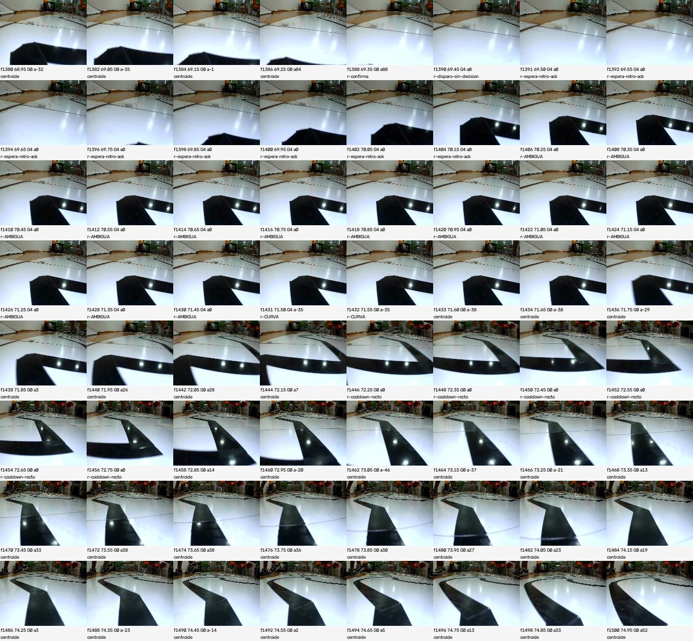
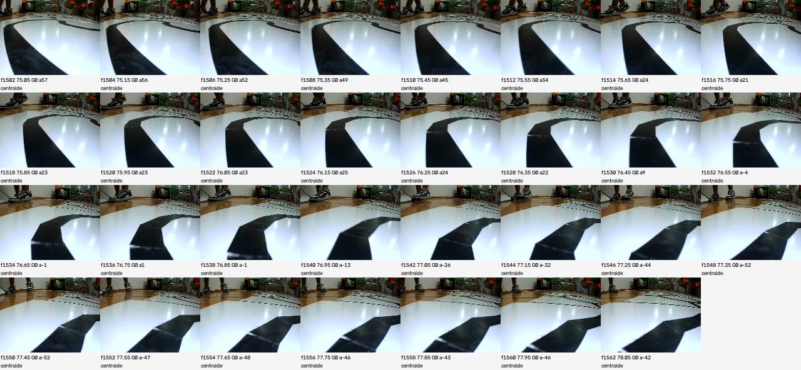
Rama previa confirma derecha -57,9 tras ambiguedad; recaptura con cambios de signo y continua el zigzag.
| start | end | gs | quien | angle_first | angle_last | duration |
|---|---|---|---|---|---|---|
| 1599 | 1606 | 0 | centroide | -64.0 | -61.7 | 0.272 |
| 1607 | 1608 | 0 | recup-confirma | -61.7 | -61.7 | 0.032 |
| 1609 | 1609 | 4 | recup-disparo-sin-decision | 0.0 | 0.0 | 0.000 |
| 1610 | 1625 | 4 | recup-espera-retro-ack | 0.0 | 0.0 | 0.535 |
| 1626 | 1627 | 4 | recup-AMBIGUA | 0.0 | 0.0 | 0.041 |
| 1628 | 1645 | 4 | recup-CURVA | -57.9 | -57.9 | 0.634 |
| 1646 | 1646 | 0 | recup-CURVA | -57.9 | -57.9 | 0.000 |
| 1647 | 1751 | 0 | centroide | -5.9 | 84.3 | 4.605 |
| 1752 | 1753 | 0 | recup-confirma | 84.3 | 84.3 | 0.032 |
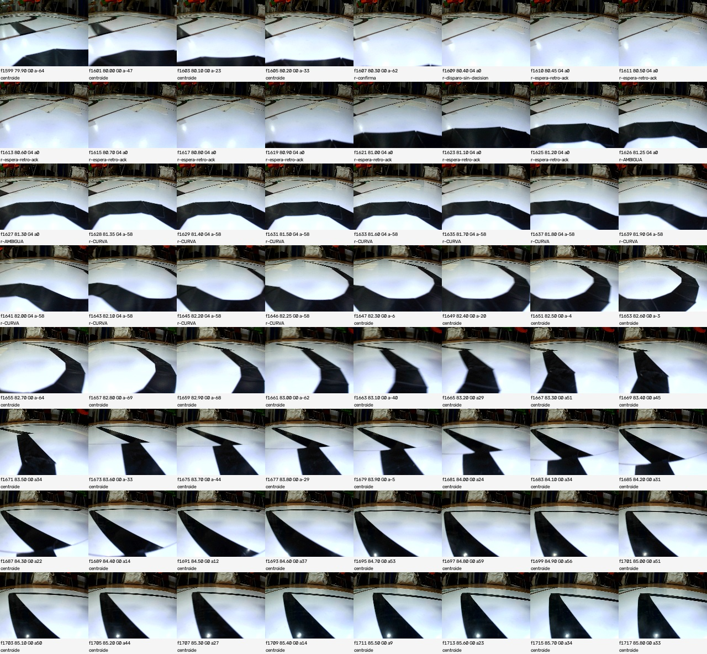
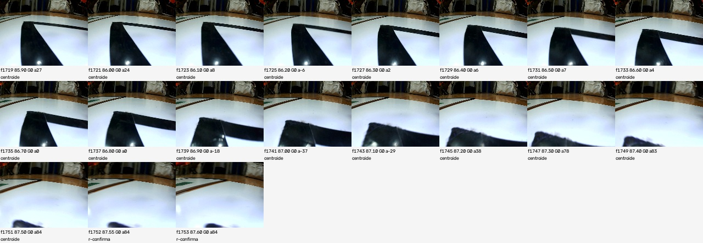
Derecha -70,4; COMPLETAR_GIRO -85 sostenido y oscilacion al volver al seguidor; sigue con linea visible.
| start | end | gs | quien | angle_first | angle_last | duration |
|---|---|---|---|---|---|---|
| 1744 | 1751 | 0 | centroide | 1.6 | 84.3 | 0.250 |
| 1752 | 1753 | 0 | recup-confirma | 84.3 | 84.3 | 0.032 |
| 1754 | 1754 | 4 | recup-disparo-sin-decision | 0.0 | 0.0 | 0.000 |
| 1755 | 1770 | 4 | recup-espera-retro-ack | 0.0 | 0.0 | 0.509 |
| 1771 | 1777 | 4 | recup-AMBIGUA | 0.0 | 0.0 | 0.239 |
| 1778 | 1790 | 4 | recup-CURVA | -70.4 | -70.4 | 0.469 |
| 1791 | 1791 | 0 | recup-CURVA | -70.4 | -70.4 | 0.000 |
| 1792 | 1795 | 0 | centroide | 19.5 | -7.0 | 0.123 |
| 1796 | 1801 | 0 | recup-cooldown-recto | 0.0 | 0.0 | 0.184 |
| 1802 | 1812 | 0 | recup-completa-giro | -85.0 | -85.0 | 0.378 |
| 1813 | 1871 | 0 | centroide | -36.1 | 43.3 | 2.202 |
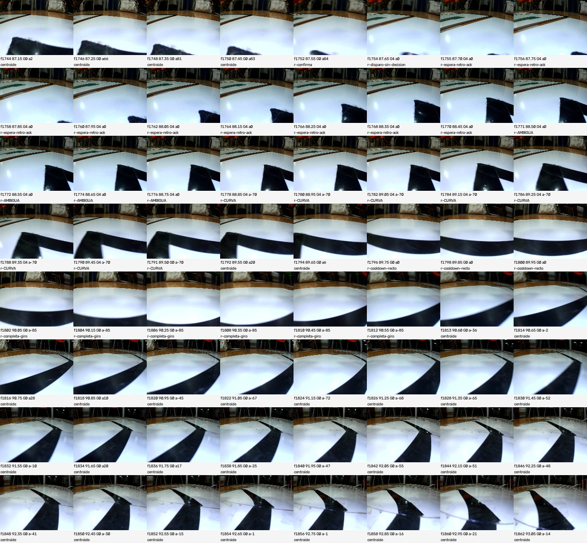
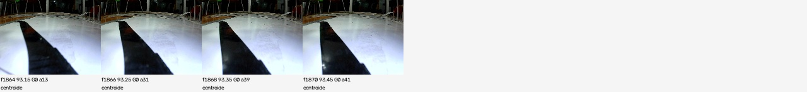
Derecha -47; busqueda +85 recupera cinta en f2157. El limite de un segundo termina en GS19 f2172 con 3258 px conectados.
| start | end | gs | quien | angle_first | angle_last | duration |
|---|---|---|---|---|---|---|
| 2085 | 2092 | 0 | centroide | -47.0 | -82.2 | 0.272 |
| 2093 | 2094 | 0 | recup-confirma | -82.2 | -82.2 | 0.034 |
| 2095 | 2095 | 4 | recup-disparo-sin-decision | 0.0 | 0.0 | 0.000 |
| 2096 | 2109 | 4 | recup-espera-retro-ack | 0.0 | 0.0 | 0.499 |
| 2110 | 2110 | 4 | recup-AMBIGUA | 0.0 | 0.0 | 0.000 |
| 2111 | 2132 | 4 | recup-CURVA | -47.0 | -47.0 | 0.710 |
| 2133 | 2133 | 0 | recup-CURVA | 0.0 | 0.0 | 0.000 |
| 2134 | 2143 | 0 | recup-cooldown-recto | 0.0 | 0.0 | 0.294 |
| 2144 | 2156 | 0 | recup-guard-reenganche | 85.0 | 85.0 | 0.396 |
| 2157 | 2171 | 0 | centroide | 48.0 | -30.3 | 0.553 |
| 2172 | 2172 | 19 | recup-guard-stop | 0.0 | 0.0 | 0.000 |
| 2173 | 2267 | 19 | perdida-failsafe-persistente | 0.0 | 0.0 | 3.533 |
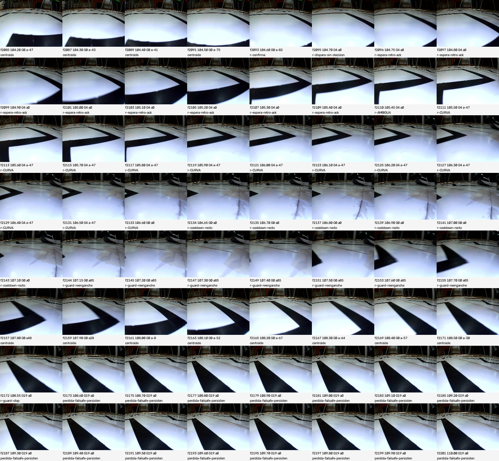
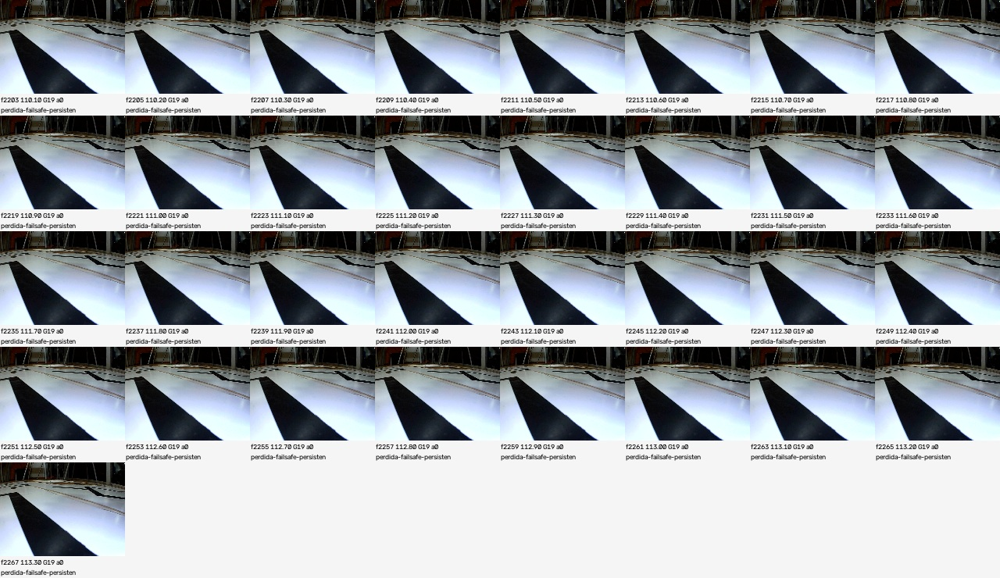
Rama previa cambia el lado y manda derecha -12; tras cooldown vuelve a cinta. Mas tarde pierde siguiente codo izquierdo y dispara 14.
| start | end | gs | quien | angle_first | angle_last | duration |
|---|---|---|---|---|---|---|
| 2396 | 2403 | 0 | centroide | -45.5 | -12.6 | 0.272 |
| 2404 | 2405 | 0 | recup-confirma | -12.6 | -12.6 | 0.035 |
| 2406 | 2406 | 4 | recup-disparo-sin-decision | 0.0 | 0.0 | 0.000 |
| 2407 | 2422 | 4 | recup-espera-retro-ack | 0.0 | 0.0 | 0.512 |
| 2423 | 2423 | 4 | recup-AMBIGUA | 0.0 | 0.0 | 0.000 |
| 2424 | 2444 | 4 | recup-CURVA | -12.0 | -12.0 | 0.708 |
| 2445 | 2445 | 0 | recup-CURVA | 0.0 | 0.0 | 0.000 |
| 2446 | 2455 | 0 | recup-cooldown-recto | 0.0 | 0.0 | 0.304 |
| 2456 | 2565 | 0 | centroide | 60.8 | -88.1 | 4.188 |
| 2566 | 2567 | 0 | recup-confirma | -88.1 | -88.1 | 0.031 |
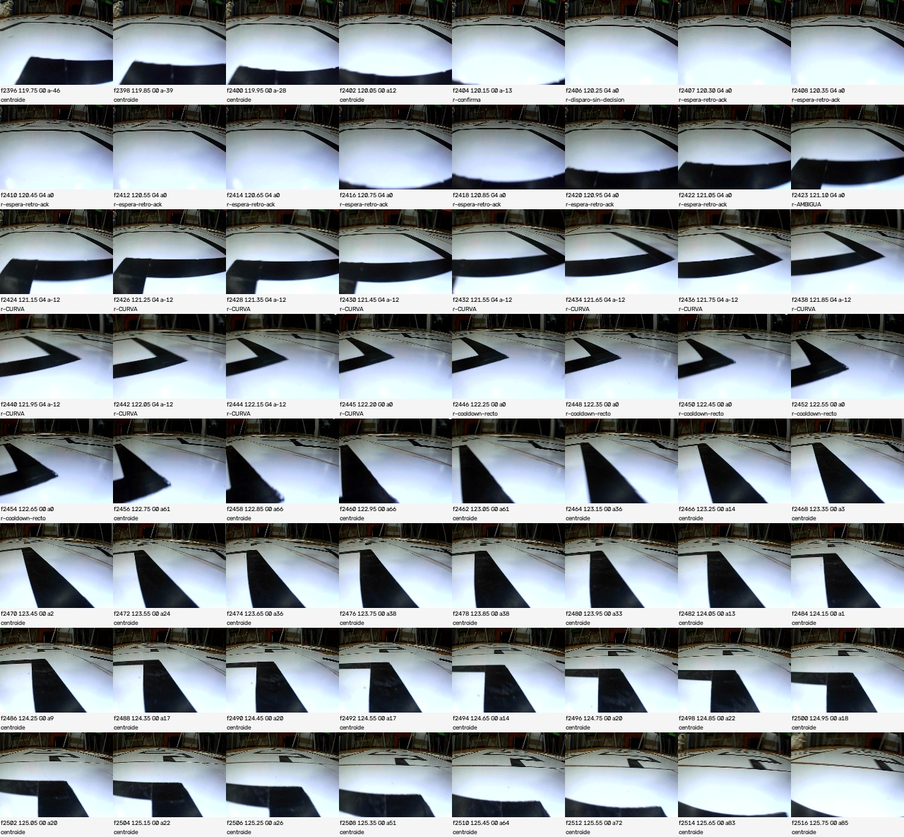
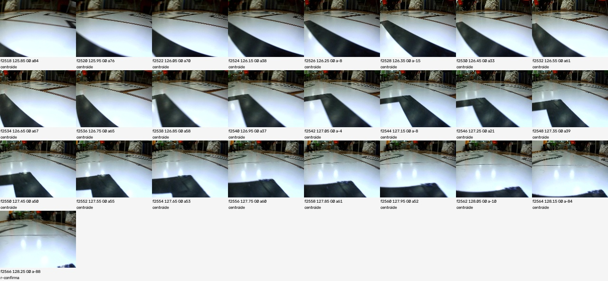
Izquierda +64,7; tras tramo recto de cooldown vuelve al seguidor y continua curva.
| start | end | gs | quien | angle_first | angle_last | duration |
|---|---|---|---|---|---|---|
| 2558 | 2565 | 0 | centroide | 60.7 | -88.1 | 0.258 |
| 2566 | 2567 | 0 | recup-confirma | -88.1 | -88.1 | 0.031 |
| 2568 | 2568 | 4 | recup-disparo-sin-decision | 0.0 | 0.0 | 0.000 |
| 2569 | 2584 | 4 | recup-espera-retro-ack | 0.0 | 0.0 | 0.521 |
| 2585 | 2585 | 4 | recup-AMBIGUA | 0.0 | 0.0 | 0.000 |
| 2586 | 2605 | 4 | recup-CURVA | 64.7 | 64.7 | 0.679 |
| 2606 | 2606 | 0 | recup-CURVA | 0.0 | 0.0 | 0.000 |
| 2607 | 2614 | 0 | recup-cooldown-recto | 0.0 | 0.0 | 0.233 |
| 2615 | 2736 | 0 | centroide | -50.6 | 76.0 | 4.624 |
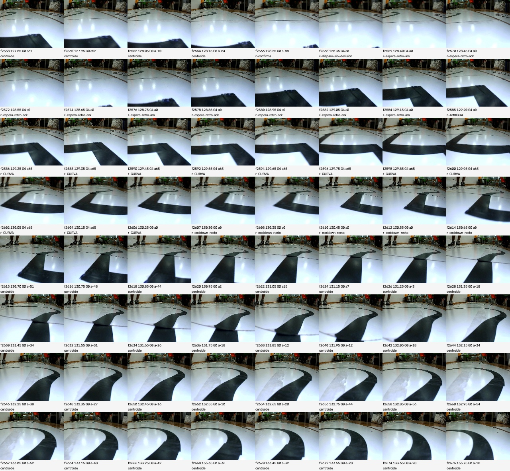
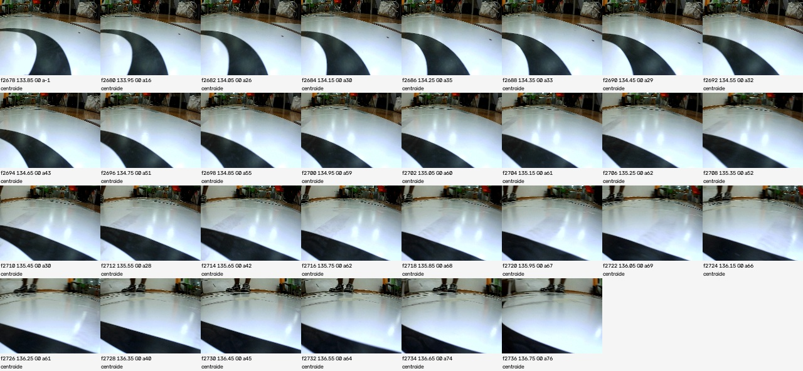
Derecha -59,8; COMPLETAR_GIRO -85 y varias inversiones de signo antes del GAP 16.
| start | end | gs | quien | angle_first | angle_last | duration |
|---|---|---|---|---|---|---|
| 2862 | 2869 | 0 | centroide | -18.5 | 85.0 | 0.268 |
| 2870 | 2871 | 0 | recup-confirma | 85.0 | 85.0 | 0.031 |
| 2872 | 2872 | 4 | recup-disparo-sin-decision | 0.0 | 0.0 | 0.000 |
| 2873 | 2887 | 4 | recup-espera-retro-ack | 0.0 | 0.0 | 0.526 |
| 2888 | 2888 | 4 | recup-AMBIGUA | 0.0 | 0.0 | 0.000 |
| 2889 | 2906 | 4 | recup-CURVA | -59.8 | -59.8 | 0.666 |
| 2907 | 2907 | 0 | recup-CURVA | -59.8 | -59.8 | 0.000 |
| 2908 | 2908 | 0 | centroide | -13.3 | -13.3 | 0.000 |
| 2909 | 2917 | 0 | recup-completa-giro | -85.0 | -85.0 | 0.326 |
| 2918 | 2961 | 0 | centroide | 14.1 | -42.4 | 1.607 |
| 2962 | 2963 | 0 | recup-confirma | -42.4 | -42.4 | 0.034 |
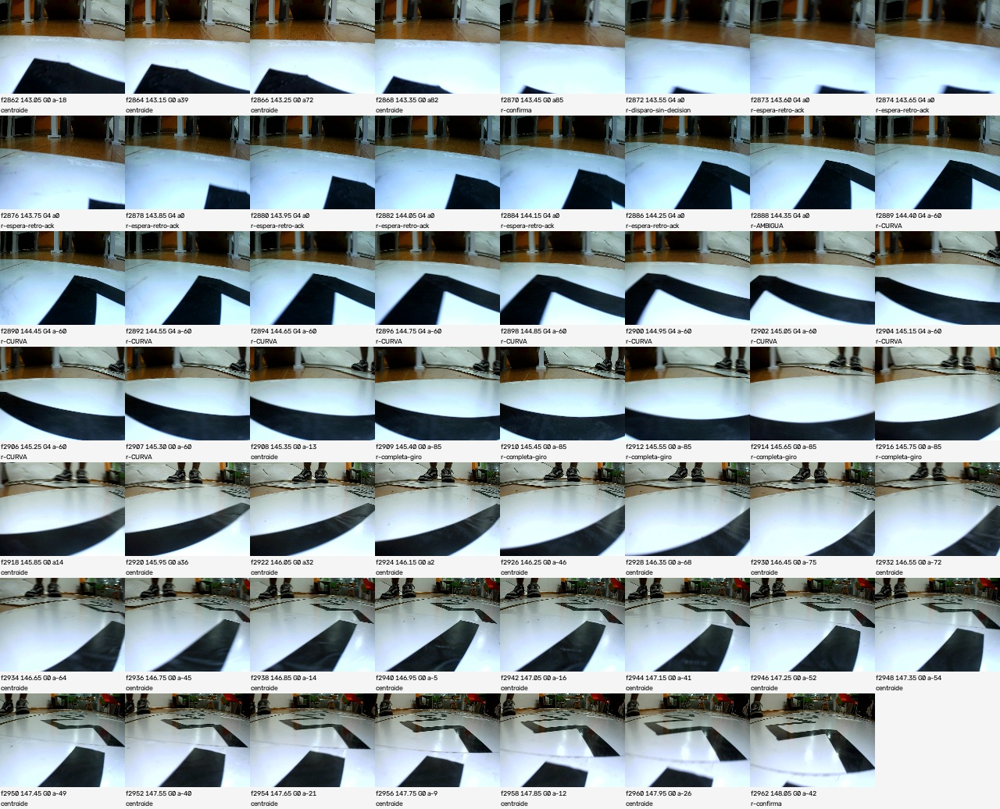
GS18 recto recupera en f3003; se pierde la curva inmediata y dispara 17 en f3039.
| start | end | gs | quien | angle_first | angle_last | duration |
|---|---|---|---|---|---|---|
| 2954 | 2961 | 0 | centroide | -21.0 | -42.4 | 0.257 |
| 2962 | 2963 | 0 | recup-confirma | -42.4 | -42.4 | 0.034 |
| 2964 | 2964 | 4 | recup-disparo-sin-decision | 0.0 | 0.0 | 0.000 |
| 2965 | 2980 | 4 | recup-espera-retro-ack | 0.0 | 0.0 | 0.521 |
| 2981 | 2981 | 4 | recup-AMBIGUA | 0.0 | 0.0 | 0.000 |
| 2982 | 2982 | 18 | gap-inicio | 0.0 | 0.0 | 0.000 |
| 2983 | 3002 | 18 | gap-busca-negro | 0.0 | 0.0 | 0.676 |
| 3003 | 3003 | 0 | gap-recuperado | 0.0 | 0.0 | 0.000 |
| 3004 | 3036 | 0 | centroide | -45.4 | 88.4 | 1.246 |
| 3037 | 3038 | 0 | recup-confirma | 88.4 | 88.4 | 0.027 |
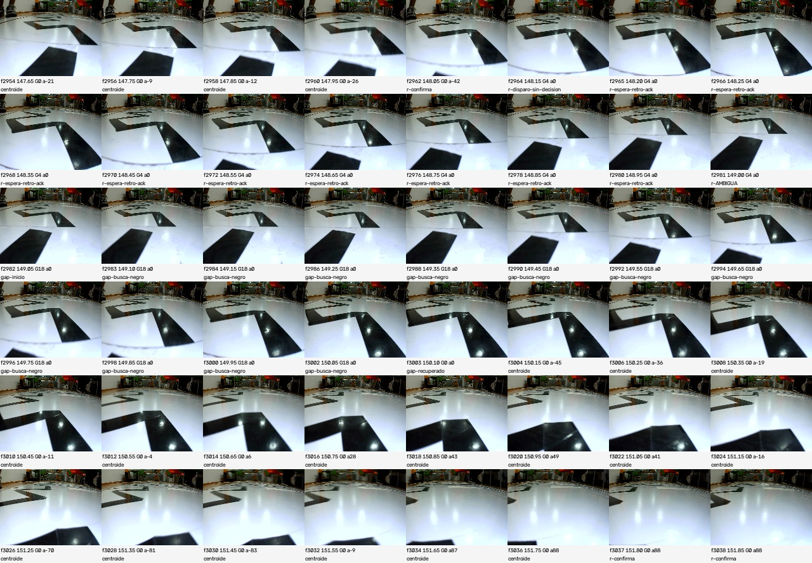
Izquierda +46,5; entrega al centroide -65,1, oscila, sigue la cinta y pierde siguiente codo derecho en 18.
| start | end | gs | quien | angle_first | angle_last | duration |
|---|---|---|---|---|---|---|
| 3029 | 3036 | 0 | centroide | -82.8 | 88.4 | 0.253 |
| 3037 | 3038 | 0 | recup-confirma | 88.4 | 88.4 | 0.027 |
| 3039 | 3039 | 4 | recup-disparo-sin-decision | 0.0 | 0.0 | 0.000 |
| 3040 | 3054 | 4 | recup-espera-retro-ack | 0.0 | 0.0 | 0.504 |
| 3055 | 3055 | 4 | recup-AMBIGUA | 0.0 | 0.0 | 0.000 |
| 3056 | 3074 | 4 | recup-CURVA | 46.5 | 46.5 | 0.705 |
| 3075 | 3075 | 0 | recup-CURVA | 46.5 | 46.5 | 0.000 |
| 3076 | 3164 | 0 | centroide | -65.1 | 87.8 | 3.453 |
| 3165 | 3166 | 0 | recup-confirma | 87.8 | 87.8 | 0.026 |
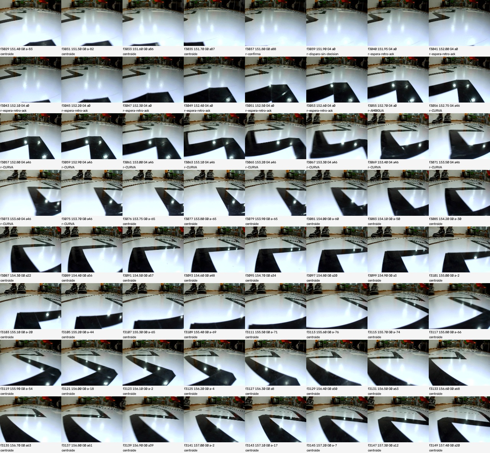
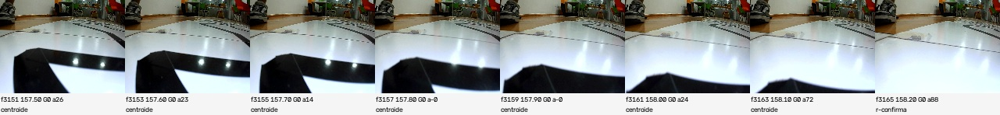
Derecha -58,4; pasa por cooldown recto con cinta transversal. Luego recaptura y continua el zigzag.
| start | end | gs | quien | angle_first | angle_last | duration |
|---|---|---|---|---|---|---|
| 3157 | 3164 | 0 | centroide | -0.5 | 87.8 | 0.261 |
| 3165 | 3166 | 0 | recup-confirma | 87.8 | 87.8 | 0.026 |
| 3167 | 3167 | 4 | recup-disparo-sin-decision | 0.0 | 0.0 | 0.000 |
| 3168 | 3183 | 4 | recup-espera-retro-ack | 0.0 | 0.0 | 0.520 |
| 3184 | 3185 | 4 | recup-AMBIGUA | 0.0 | 0.0 | 0.040 |
| 3186 | 3203 | 4 | recup-CURVA | -58.4 | -58.4 | 0.640 |
| 3204 | 3204 | 0 | recup-CURVA | 0.0 | 0.0 | 0.000 |
| 3205 | 3213 | 0 | recup-cooldown-recto | 0.0 | 0.0 | 0.273 |
| 3214 | 3332 | 0 | centroide | 25.9 | -40.8 | 4.571 |
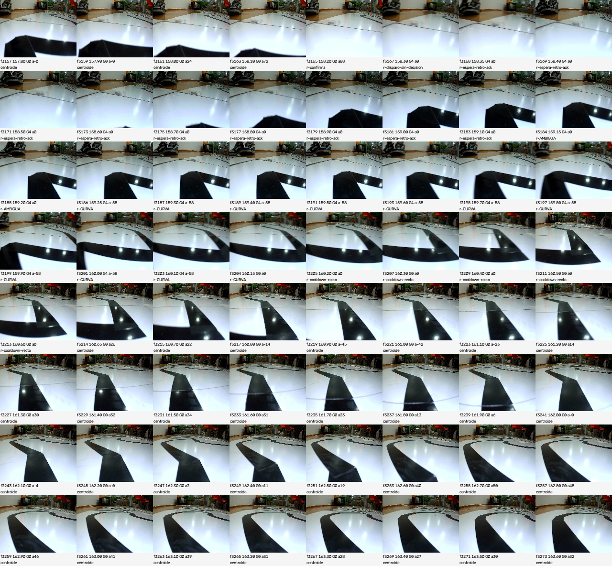
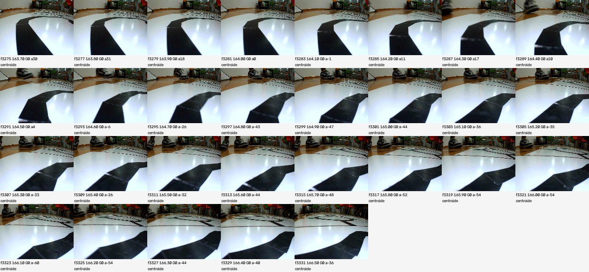
Derecha -73; vuelve al centroide con +57 y cambios de signo; mantiene cinta en la salida revisada.
| start | end | gs | quien | angle_first | angle_last | duration |
|---|---|---|---|---|---|---|
| 3355 | 3362 | 0 | centroide | -62.6 | -82.3 | 0.267 |
| 3363 | 3364 | 0 | recup-confirma | -82.3 | -82.3 | 0.029 |
| 3365 | 3365 | 4 | recup-disparo-sin-decision | 0.0 | 0.0 | 0.000 |
| 3366 | 3380 | 4 | recup-espera-retro-ack | 0.0 | 0.0 | 0.503 |
| 3381 | 3382 | 4 | recup-AMBIGUA | 0.0 | 0.0 | 0.033 |
| 3383 | 3403 | 4 | recup-CURVA | -73.0 | -73.0 | 0.677 |
| 3404 | 3404 | 0 | recup-CURVA | 0.0 | 0.0 | 0.000 |
| 3405 | 3411 | 0 | recup-cooldown-recto | 0.0 | 0.0 | 0.218 |
| 3412 | 3520 | 0 | centroide | 57.3 | 83.9 | 4.174 |
| 3521 | 3522 | 0 | recup-confirma | 83.9 | 83.9 | 0.037 |
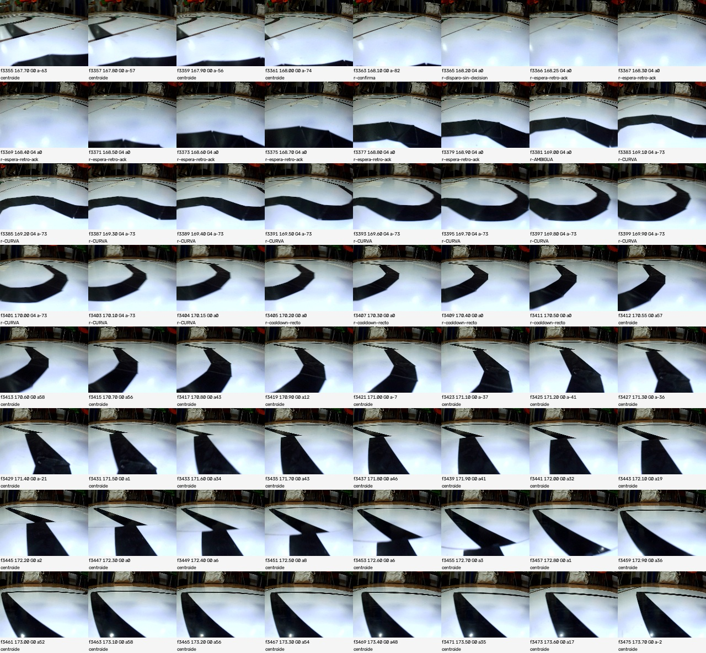
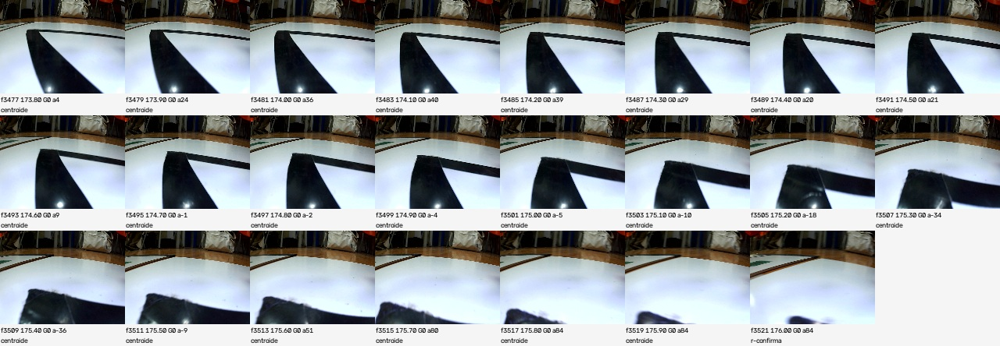
Rama previa derecha -43,2; COMPLETAR_GIRO -85. Vuelve al seguidor y continua.
| start | end | gs | quien | angle_first | angle_last | duration |
|---|---|---|---|---|---|---|
| 3513 | 3520 | 0 | centroide | 51.0 | 83.9 | 0.244 |
| 3521 | 3522 | 0 | recup-confirma | 83.9 | 83.9 | 0.037 |
| 3523 | 3523 | 4 | recup-disparo-sin-decision | 0.0 | 0.0 | 0.000 |
| 3524 | 3539 | 4 | recup-espera-retro-ack | 0.0 | 0.0 | 0.512 |
| 3540 | 3540 | 4 | recup-AMBIGUA | 0.0 | 0.0 | 0.000 |
| 3541 | 3559 | 4 | recup-CURVA | -43.2 | -43.2 | 0.706 |
| 3560 | 3560 | 0 | recup-CURVA | 0.0 | 0.0 | 0.000 |
| 3561 | 3564 | 0 | recup-cooldown-recto | 0.0 | 0.0 | 0.110 |
| 3565 | 3576 | 0 | recup-completa-giro | -85.0 | -85.0 | 0.412 |
| 3577 | 3630 | 0 | centroide | -61.6 | 41.2 | 2.029 |
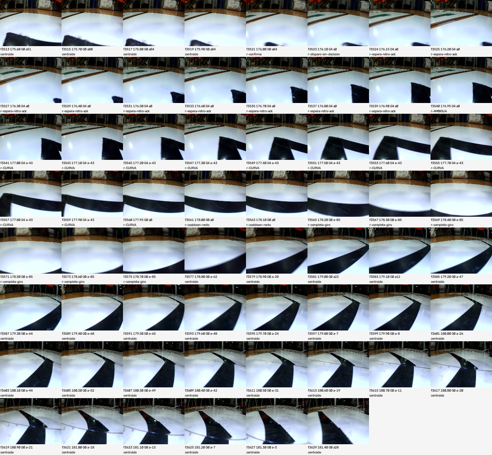
GAP recto del puente; recupera en f3849 y mantiene cinta. Hay confirmaciones de perdida breves sin nuevo GS4.
| start | end | gs | quien | angle_first | angle_last | duration |
|---|---|---|---|---|---|---|
| 3802 | 3809 | 0 | centroide | -40.5 | -36.7 | 0.298 |
| 3810 | 3811 | 0 | recup-confirma | -36.7 | -36.7 | 0.036 |
| 3812 | 3812 | 4 | recup-disparo-sin-decision | 0.0 | 0.0 | 0.000 |
| 3813 | 3826 | 4 | recup-espera-retro-ack | 0.0 | 0.0 | 0.520 |
| 3827 | 3827 | 4 | recup-AMBIGUA | 0.0 | 0.0 | 0.000 |
| 3828 | 3828 | 18 | gap-inicio | 0.0 | 0.0 | 0.000 |
| 3829 | 3848 | 18 | gap-busca-negro | 0.0 | 0.0 | 0.736 |
| 3849 | 3849 | 0 | gap-recuperado | 0.0 | 0.0 | 0.000 |
| 3850 | 3928 | 0 | centroide | -61.6 | -0.9 | 3.145 |
| 3929 | 3930 | 0 | recup-confirma | -0.9 | -0.9 | 0.036 |
| 3931 | 3952 | 0 | centroide | 2.0 | -2.4 | 0.811 |
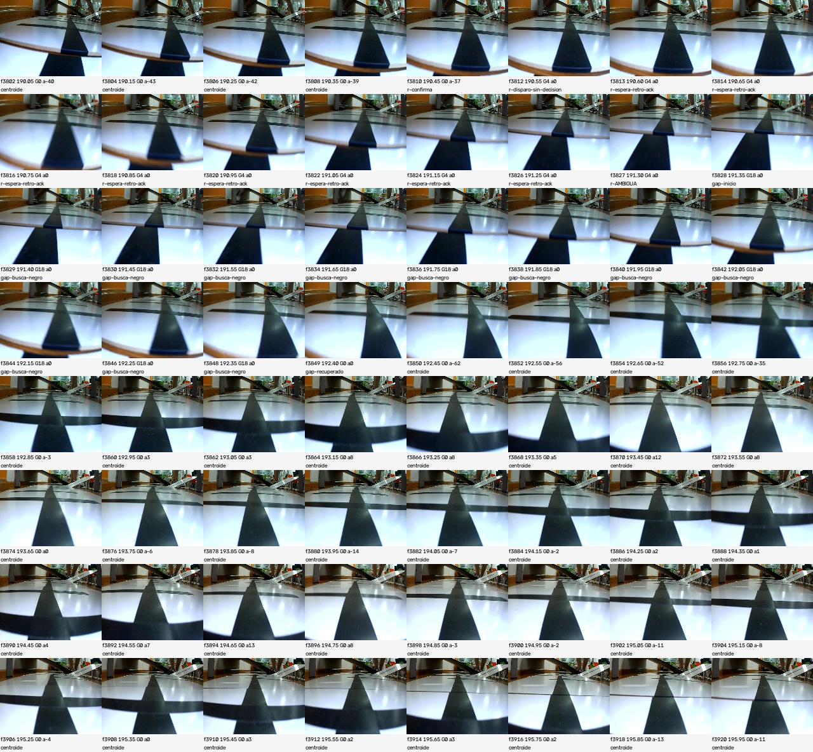
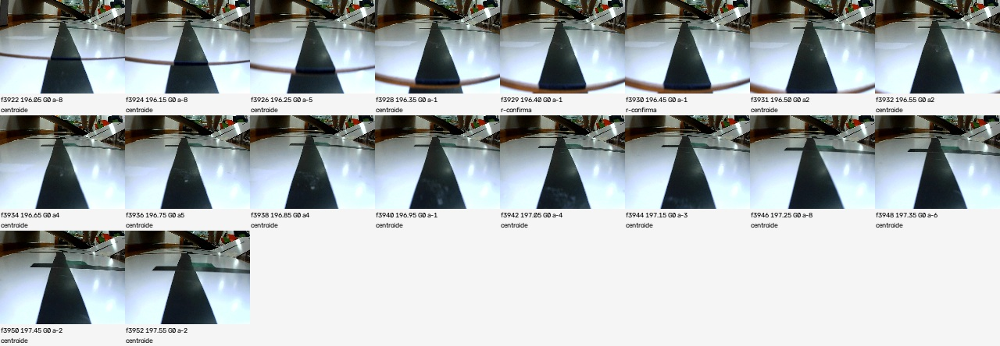
Derecha -59,6; devuelve al seguidor, corrige fuerte y mantiene linea al entrar en rampa.
| start | end | gs | quien | angle_first | angle_last | duration |
|---|---|---|---|---|---|---|
| 4127 | 4134 | 0 | centroide | -58.5 | 84.3 | 0.272 |
| 4135 | 4136 | 0 | recup-confirma | 84.3 | 84.3 | 0.030 |
| 4137 | 4137 | 4 | recup-disparo-sin-decision | 0.0 | 0.0 | 0.000 |
| 4138 | 4152 | 4 | recup-espera-retro-ack | 0.0 | 0.0 | 0.525 |
| 4153 | 4153 | 4 | recup-AMBIGUA | 0.0 | 0.0 | 0.000 |
| 4154 | 4173 | 4 | recup-CURVA | -59.6 | -59.6 | 0.678 |
| 4174 | 4174 | 0 | recup-CURVA | 0.0 | 0.0 | 0.000 |
| 4175 | 4182 | 0 | recup-cooldown-recto | 0.0 | 0.0 | 0.231 |
| 4183 | 4251 | 0 | centroide | 24.9 | -9.0 | 2.685 |
| 4252 | 4253 | 0 | rampa-linea | -13.4 | -8.9 | 0.048 |
| 4254 | 4255 | 0 | rampa-recta | 0.5 | 2.2 | 0.040 |
| 4256 | 4264 | 0 | rampa-linea | 0.1 | -41.5 | 0.336 |
| 4265 | 4271 | 0 | rampa-corta-recto | 0.0 | 0.0 | 0.222 |
| 4272 | 4292 | 0 | rampa-cresta-recto | 0.0 | 0.0 | 0.676 |
| 4293 | 4300 | 0 | rampa-linea | 50.7 | 2.5 | 0.311 |
| 4301 | 4302 | 0 | rampa-recta | -18.9 | -19.5 | 0.044 |
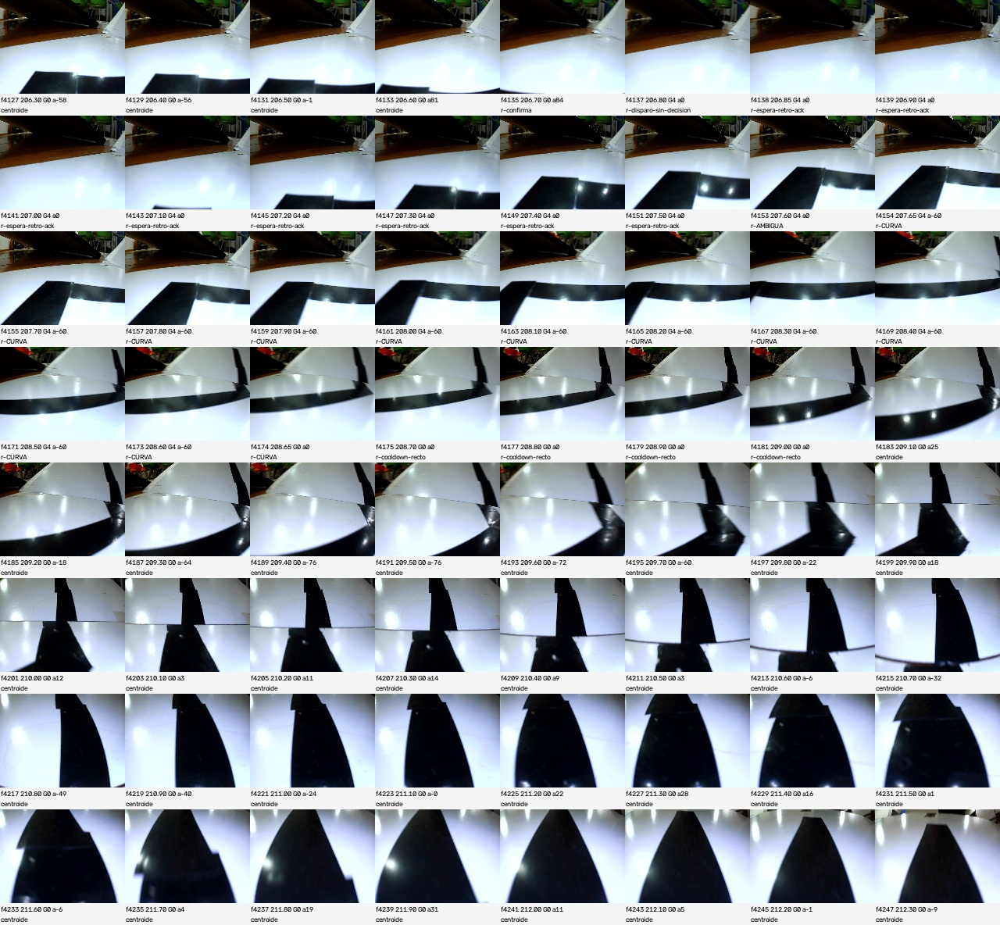
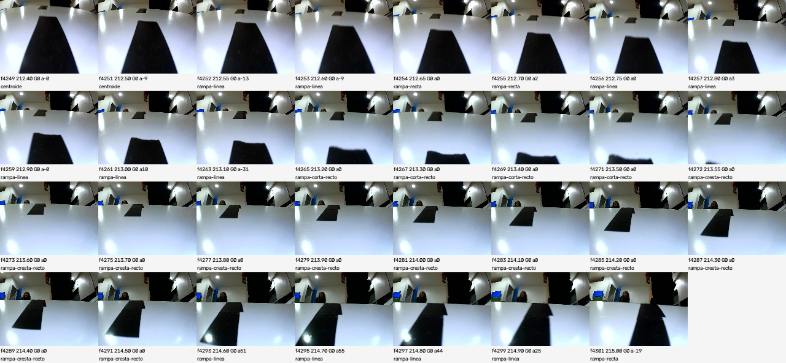
GAP recto despues de rampa; recupera en f4745 y sigue linea hacia descenso.
| start | end | gs | quien | angle_first | angle_last | duration |
|---|---|---|---|---|---|---|
| 4669 | 4676 | 0 | centroide | -14.2 | 43.6 | 0.255 |
| 4677 | 4678 | 0 | recup-confirma | 43.6 | 43.6 | 0.032 |
| 4679 | 4679 | 4 | recup-disparo-sin-decision | 0.0 | 0.0 | 0.000 |
| 4680 | 4695 | 4 | recup-espera-retro-ack | 0.0 | 0.0 | 0.510 |
| 4696 | 4697 | 4 | recup-AMBIGUA | 0.0 | 0.0 | 0.039 |
| 4698 | 4698 | 18 | gap-inicio | 0.0 | 0.0 | 0.000 |
| 4699 | 4744 | 18 | gap-busca-negro | 0.0 | 0.0 | 1.479 |
| 4745 | 4745 | 0 | gap-recuperado | 0.0 | 0.0 | 0.000 |
| 4746 | 4809 | 0 | centroide | 6.8 | 68.3 | 2.490 |
| 4810 | 4814 | 0 | bajada-linea | 73.4 | 52.0 | 0.159 |
| 4815 | 4830 | 0 | bajada-recta | -6.2 | 0.3 | 0.600 |
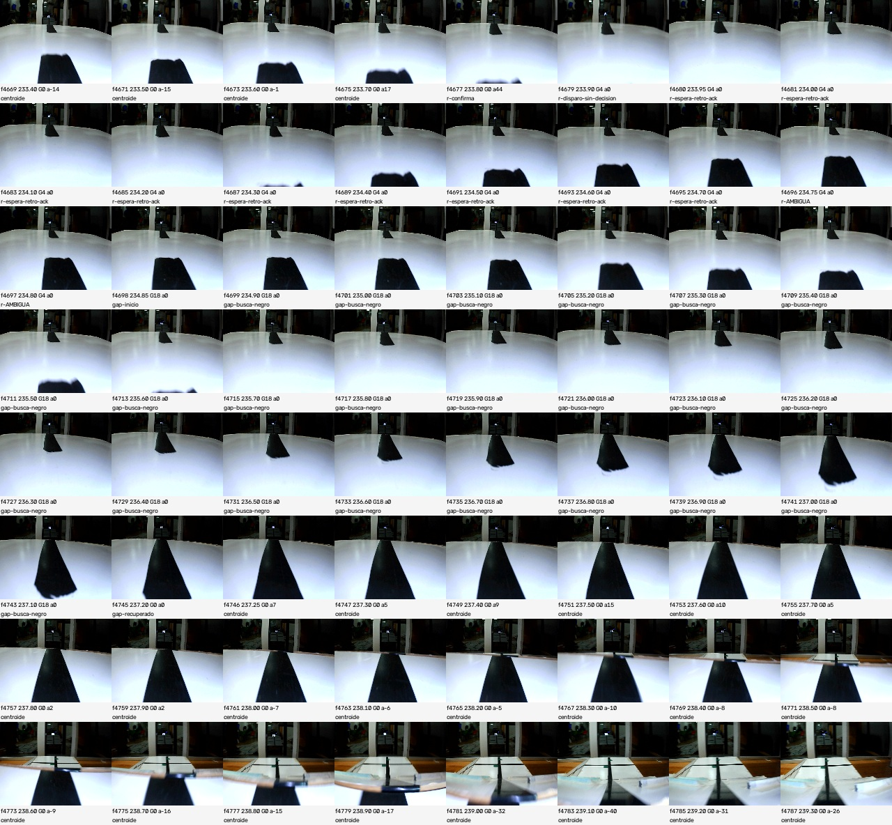
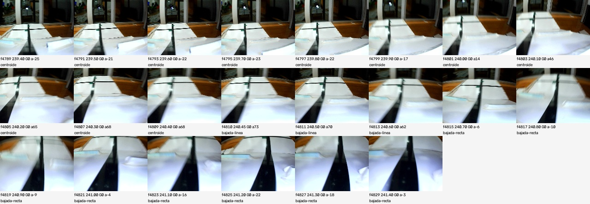
Izquierda +66,7; complemento guard +85 de dos cuadros. Sigue hasta verde derecho GS2; tras verde hay mascara vacia temporal, separado del cierre de recuperacion.
| start | end | gs | quien | angle_first | angle_last | duration |
|---|---|---|---|---|---|---|
| 5951 | 5958 | 0 | centroide | 35.5 | -87.1 | 0.273 |
| 5959 | 5960 | 0 | recup-confirma | -87.1 | -87.1 | 0.032 |
| 5961 | 5961 | 4 | recup-disparo-sin-decision | 0.0 | 0.0 | 0.000 |
| 5962 | 5976 | 4 | recup-espera-retro-ack | 0.0 | 0.0 | 0.519 |
| 5977 | 5977 | 4 | recup-AMBIGUA | 0.0 | 0.0 | 0.000 |
| 5978 | 5997 | 4 | recup-CURVA | 66.7 | 66.7 | 0.685 |
| 5998 | 5998 | 0 | recup-CURVA | 0.0 | 0.0 | 0.000 |
| 5999 | 6007 | 0 | recup-cooldown-recto | 0.0 | 0.0 | 0.284 |
| 6008 | 6009 | 0 | recup-guard-completa | 85.0 | 85.0 | 0.041 |
| 6010 | 6057 | 0 | centroide | 1.9 | -11.0 | 1.900 |
| 6058 | 6068 | 2 | centroide | -5.0 | 9.0 | 0.398 |
| 6069 | 6078 | 0 | centroide | 9.8 | 89.3 | 0.333 |
| 6079 | 6089 | 0 | v66-bloqueo-mascara-vacia-recto | 0.0 | 0.0 | 0.307 |
| 6090 | 6127 | 0 | centroide | -46.2 | 60.8 | 1.421 |
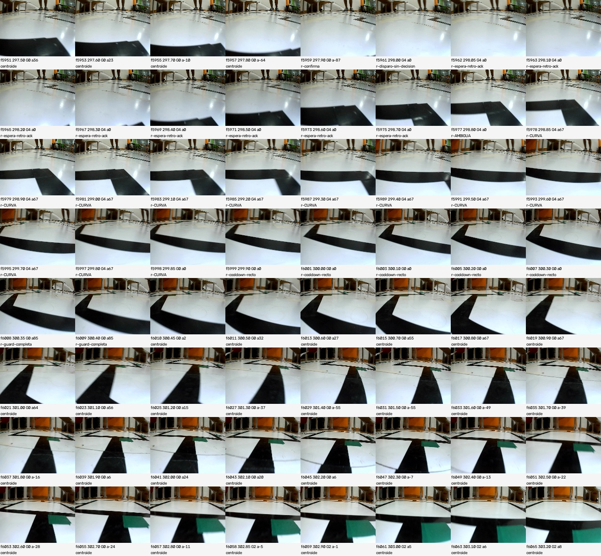
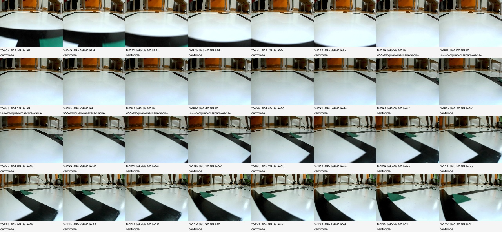
Derecha -65,5; complemento -85 no recaptura, busqueda +85 de 0,70 s lo logra. Vuelve a oscilar y continua hasta otro codo.
| start | end | gs | quien | angle_first | angle_last | duration |
|---|---|---|---|---|---|---|
| 6355 | 6362 | 0 | centroide | -51.7 | -73.8 | 0.263 |
| 6363 | 6364 | 0 | recup-confirma | -73.8 | -73.8 | 0.033 |
| 6365 | 6365 | 4 | recup-disparo-sin-decision | 0.0 | 0.0 | 0.000 |
| 6366 | 6380 | 4 | recup-espera-retro-ack | 0.0 | 0.0 | 0.529 |
| 6381 | 6381 | 4 | recup-AMBIGUA | 0.0 | 0.0 | 0.000 |
| 6382 | 6401 | 4 | recup-CURVA | -65.5 | -65.5 | 0.672 |
| 6402 | 6402 | 0 | recup-CURVA | 0.0 | 0.0 | 0.000 |
| 6403 | 6412 | 0 | recup-cooldown-recto | 0.0 | 0.0 | 0.298 |
| 6413 | 6426 | 0 | recup-guard-completa | -85.0 | -85.0 | 0.422 |
| 6427 | 6449 | 0 | recup-guard-reenganche | 85.0 | 85.0 | 0.700 |
| 6450 | 6539 | 0 | centroide | 59.0 | 63.7 | 3.405 |
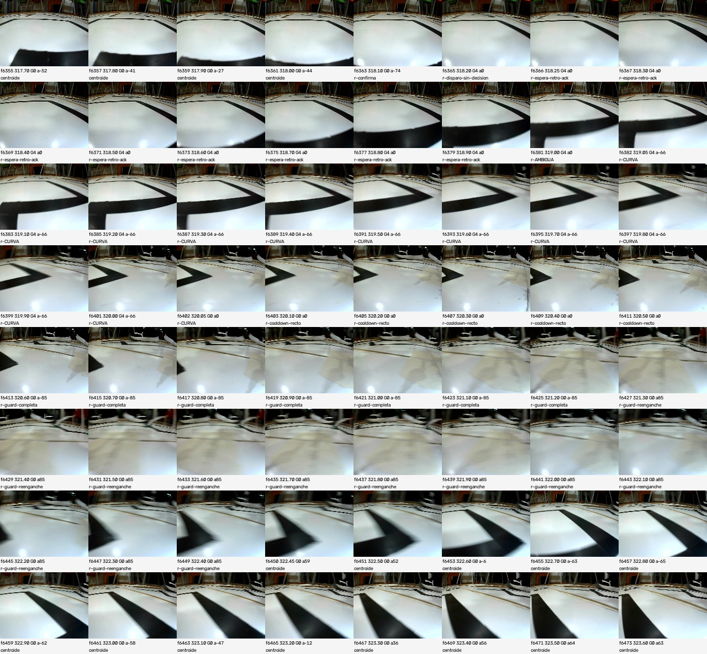
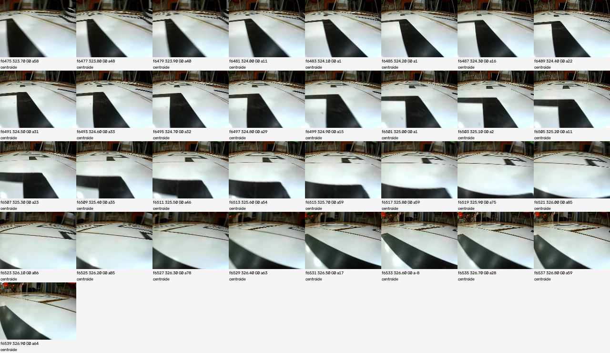
Izquierda +67,7; complemento guard +85 dos cuadros. Sigue la curva; mas adelante aparece otra perdida (27), fuera de la ventana principal de cinco segundos.
| start | end | gs | quien | angle_first | angle_last | duration |
|---|---|---|---|---|---|---|
| 6564 | 6571 | 0 | centroide | 52.1 | -87.3 | 0.266 |
| 6572 | 6573 | 0 | recup-confirma | -87.3 | -87.3 | 0.034 |
| 6574 | 6574 | 4 | recup-disparo-sin-decision | 0.0 | 0.0 | 0.000 |
| 6575 | 6590 | 4 | recup-espera-retro-ack | 0.0 | 0.0 | 0.519 |
| 6591 | 6591 | 4 | recup-AMBIGUA | 0.0 | 0.0 | 0.000 |
| 6592 | 6610 | 4 | recup-CURVA | 67.7 | 67.7 | 0.675 |
| 6611 | 6611 | 0 | recup-CURVA | 0.0 | 0.0 | 0.000 |
| 6612 | 6620 | 0 | recup-cooldown-recto | 0.0 | 0.0 | 0.279 |
| 6621 | 6622 | 0 | recup-guard-completa | 85.0 | 85.0 | 0.040 |
| 6623 | 6741 | 0 | centroide | -54.9 | 70.4 | 4.506 |
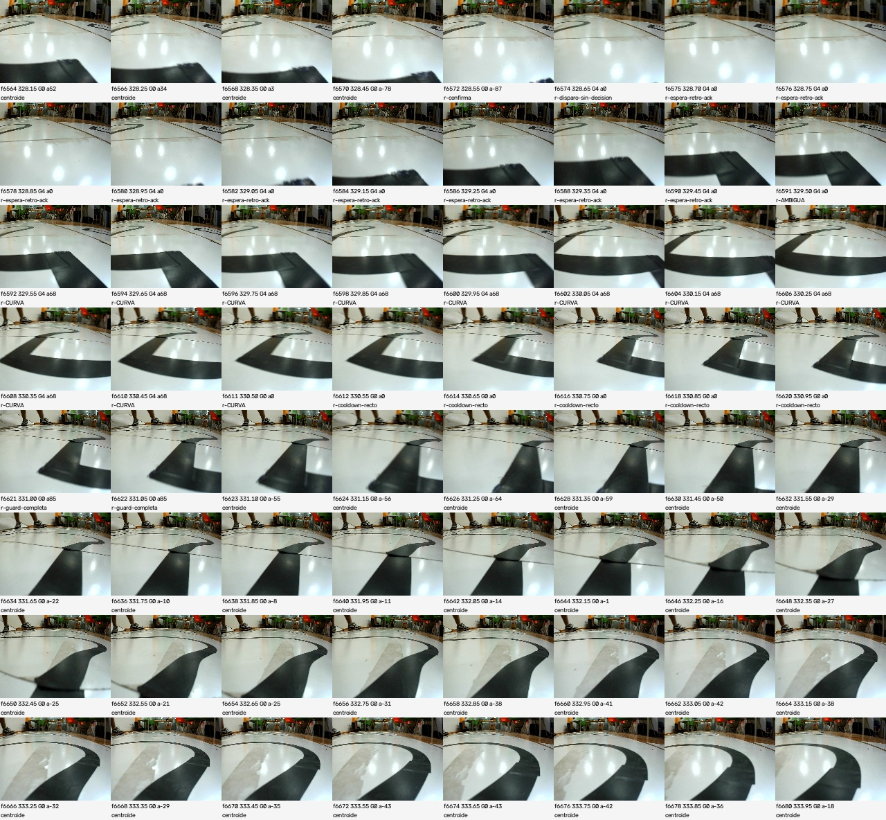
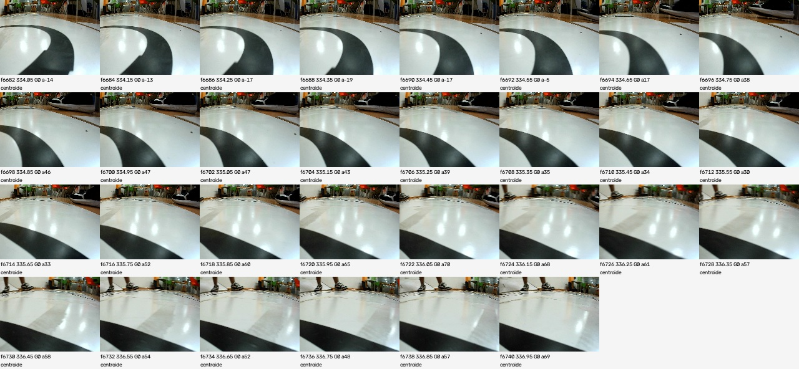
Entrada con orden +65 y cinta baja ya casi fuera. Tras retroceso se ve mayormente piso. Rama previa manda izquierda +35 tarde; no hay fragmento fresco y termina STOP.
| start | end | gs | quien | angle_first | angle_last | duration |
|---|---|---|---|---|---|---|
| 6806 | 6813 | 0 | centroide | 64.2 | 64.7 | 0.818 |
| 6814 | 6815 | 0 | recup-confirma | 64.7 | 64.7 | 0.032 |
| 6816 | 6816 | 4 | recup-disparo-sin-decision | 0.0 | 0.0 | 0.000 |
| 6817 | 6834 | 4 | recup-espera-retro-ack | 0.0 | 0.0 | 0.510 |
| 6835 | 6868 | 4 | recup-AMBIGUA | 0.0 | 0.0 | 0.962 |
| 6869 | 6870 | 4 | recup-CURVA | 35.0 | 35.0 | 0.038 |
| 6871 | 6871 | 0 | recup-CURVA | 0.0 | 0.0 | 0.000 |
| 6872 | 6875 | 0 | recup-cooldown-recto | 0.0 | 0.0 | 0.100 |
| 6876 | 6882 | 0 | v66-bloqueo-mascara-vacia-recto | 0.0 | 0.0 | 0.177 |
| 6883 | 6883 | 19 | recup-guard-stop | 0.0 | 0.0 | 0.000 |
| 6884 | 6947 | 19 | perdida-failsafe-persistente | 0.0 | 0.0 | 1.881 |
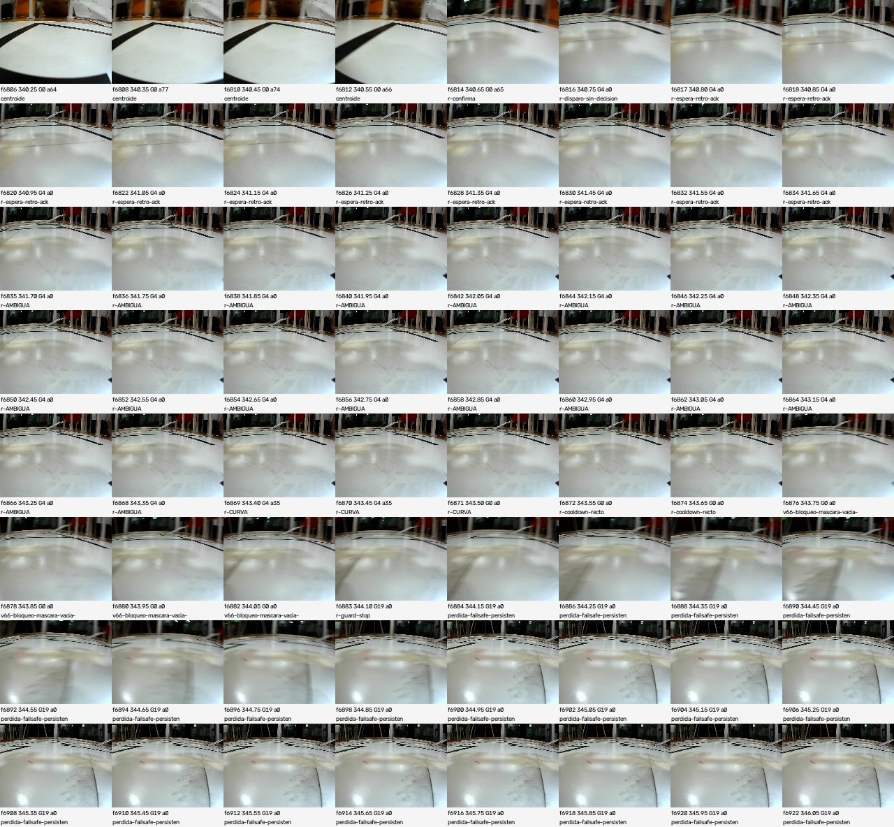
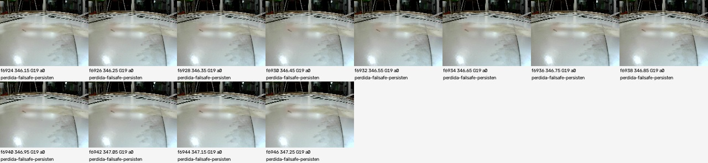
Derecha -71,3; COMPLETAR_GIRO -85. Vuelve a cinta, atraviesa hacia GAP y se pierde la siguiente curva en 29.
| start | end | gs | quien | angle_first | angle_last | duration |
|---|---|---|---|---|---|---|
| 7101 | 7108 | 0 | centroide | 77.9 | 40.6 | 0.237 |
| 7109 | 7110 | 0 | recup-confirma | 40.6 | 40.6 | 0.032 |
| 7111 | 7111 | 4 | recup-disparo-sin-decision | 0.0 | 0.0 | 0.000 |
| 7112 | 7127 | 4 | recup-espera-retro-ack | 0.0 | 0.0 | 0.514 |
| 7128 | 7129 | 4 | recup-AMBIGUA | 0.0 | 0.0 | 0.039 |
| 7130 | 7147 | 4 | recup-CURVA | -71.3 | -71.3 | 0.650 |
| 7148 | 7148 | 0 | recup-CURVA | -71.3 | -71.3 | 0.000 |
| 7149 | 7152 | 0 | centroide | 34.7 | 60.7 | 0.119 |
| 7153 | 7164 | 0 | recup-completa-giro | -85.0 | -85.0 | 0.447 |
| 7165 | 7209 | 0 | centroide | -17.4 | -38.7 | 1.650 |
| 7210 | 7211 | 0 | recup-confirma | -38.7 | -38.7 | 0.038 |
| 7212 | 7251 | 0 | centroide | -60.6 | -77.6 | 1.505 |
| 7252 | 7252 | 0 | recup-confirma | -77.6 | -77.6 | 0.000 |
| 7253 | 7259 | 0 | centroide | 86.2 | 88.6 | 0.204 |
| 7260 | 7261 | 0 | recup-confirma | 88.6 | 88.6 | 0.031 |
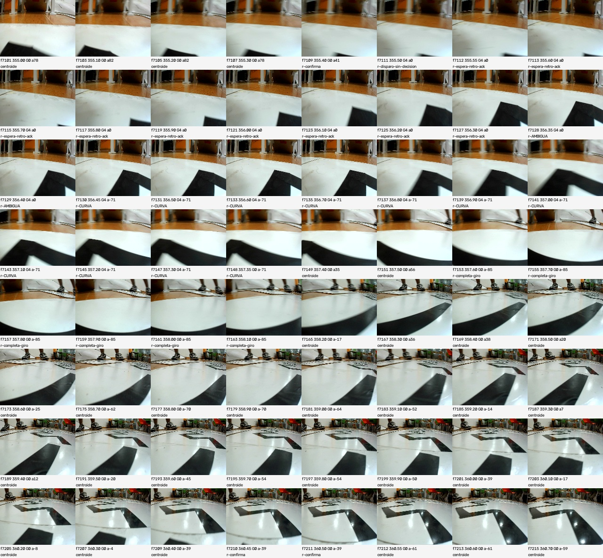
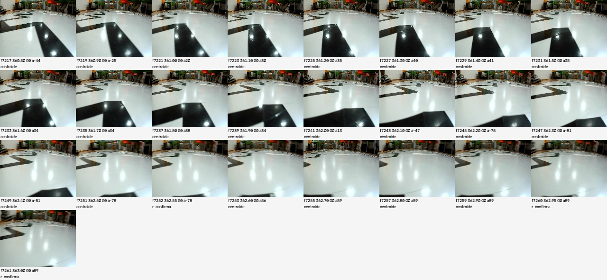
Repite 5: izquierda +41,4, complemento +85, cinta se aleja al borde derecho. Solo 9 observaciones izquierdas: no se habilita busqueda hacia fragmento.
| start | end | gs | quien | angle_first | angle_last | duration |
|---|---|---|---|---|---|---|
| 7252 | 7252 | 0 | recup-confirma | -77.6 | -77.6 | 0.000 |
| 7253 | 7259 | 0 | centroide | 86.2 | 88.6 | 0.204 |
| 7260 | 7261 | 0 | recup-confirma | 88.6 | 88.6 | 0.031 |
| 7262 | 7262 | 4 | recup-disparo-sin-decision | 0.0 | 0.0 | 0.000 |
| 7263 | 7276 | 4 | recup-espera-retro-ack | 0.0 | 0.0 | 0.504 |
| 7277 | 7277 | 4 | recup-AMBIGUA | 0.0 | 0.0 | 0.000 |
| 7278 | 7297 | 4 | recup-CURVA | 41.4 | 41.4 | 0.709 |
| 7298 | 7298 | 0 | recup-CURVA | 0.0 | 0.0 | 0.000 |
| 7299 | 7308 | 0 | recup-cooldown-recto | 0.0 | 0.0 | 0.302 |
| 7309 | 7322 | 0 | recup-guard-completa | 85.0 | 85.0 | 0.422 |
| 7323 | 7323 | 19 | recup-guard-stop | 0.0 | 0.0 | 0.000 |
| 7324 | 7420 | 19 | perdida-failsafe-persistente | 0.0 | 0.0 | 3.183 |
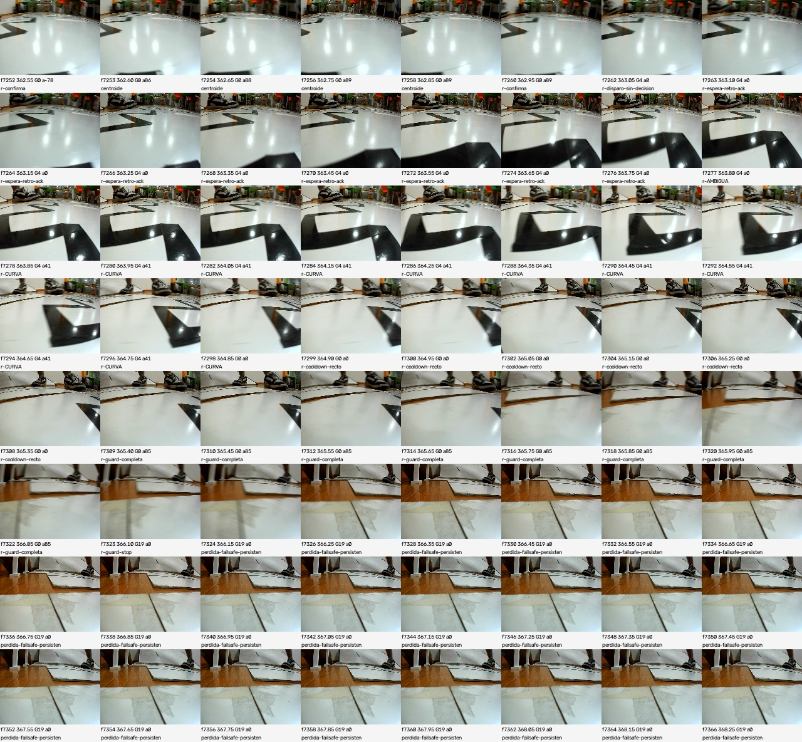
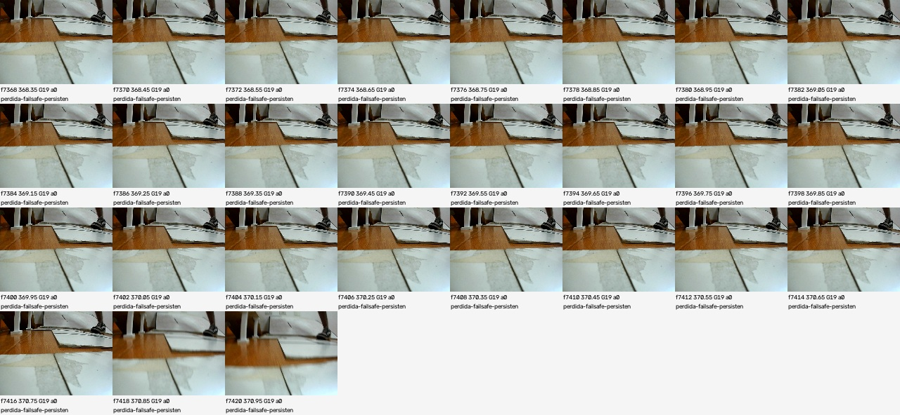